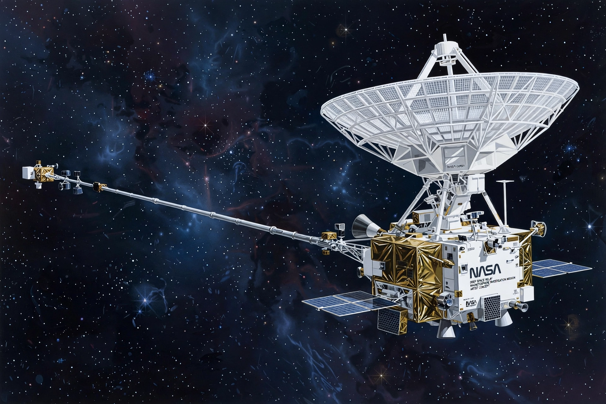

Voyager program
From Wikipedia, the free encyclopedia
| Voyager program | |
|---|---|
| Operator | NASA / JPL |
| Launches | 1977 (Voyager 2, then Voyager 1) |
| Status | Both probes in interstellar space |
| Distances | >15 billion km from the Sun |

A Voyager probe.The Voyager program is an American scientific programme employing two robotic interstellar probes, Voyager 1 and Voyager 2, launched in 1977 to exploit a rare alignment of the outer planets. Together they performed the "Grand Tour": Voyager 1 flew by Jupiter and Saturn, while Voyager 2 continued to Uranus (1986) and Neptune (1989) — still the only spacecraft visits to the ice giants.
After their planetary missions the probes began the Voyager Interstellar Mission, crossing the heliosphere's boundary — Voyager 1 in 2012, Voyager 2 in 2018 — to sample interstellar space directly. They are the most distant human-made objects, still returning data on a trickle of power nearly half a century after launch.
The Golden Record
Each probe carries a Golden Record — a gold-plated copper phonograph disc of sounds, music and images of Earth, intended as a message to any extraterrestrial civilisation that might find it. The probes' instruments are being shut down one by one as their plutonium power fades; contact is expected to last into the late 2020s or beyond, through NASA's Deep Space Network.